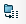

Le bouton permet d’ouvrir la fenêtre de création et de paramétrage des compteurs.

 permet d’ajouter un compteur.
permet d’ajouter un compteur.
Valider avec la touche  , le compteur apparait dans le menu déroulant.
, le compteur apparait dans le menu déroulant.

 permet de supprimer un compteur.
permet de supprimer un compteur.Sélectionner le compteur à supprimer dans le menu déroulant et utiliser le bouton  .
.

Valider le message pour supprimer le compteur.

 permet de renommer un compteur.
permet de renommer un compteur.Sélectionner le compteur à renommer et cliquer sur le bouton  .
.
Modifier le nom et valider avec le bouton OK.

Le bouton  permet de paramétrer les options générales.
permet de paramétrer les options générales.

Les compteurs peuvent être stockés soit dans un fichier XML, soit dans une base SQL
Fichier XML :

Ce paramètre permet de définir l’emplacement du fichier XML des compteurs.
Si le fichier XML est déplacé (par exemple sur un serveur), vous pouvez définir son nouvel emplacement avec le bouton  .
.

Cette option permet de créer un fichier .csv (un par compteur) contenant l’historique des valeurs utilisées dans les compteurs.
Par défaut ce fichier est sauvegardé dans le dossier ’’SmartCounter logs’’ qui se trouve dans le dossier d’installation de SmartProperties.
Base SQL :
SmartCounter peut également être utilisé avec une base SQL

L’emplacement ainsi que les identifiants de connexion à SQL doivent alors êtres renseignés
Les boutons suivants vous permettent d’importer ou d’exporter votre base SmartCounter :


Export de la base au format SQL, définir l’emplacement et donner un nom au fichier XML à sauvegarder :

Un message de confirmation vous indique que le fichier a été sauvegardé avec succès :

Attention : La licence SQL livrée avec PDM ne vous permet pas e créer une autre base de données. Vous devez utiliser une autre instance avec par exemple SQL Express Edition
Nota : Il n’est pas possible de créer un fichier avec l’historique des valeurs prises avec l’option Base SQL